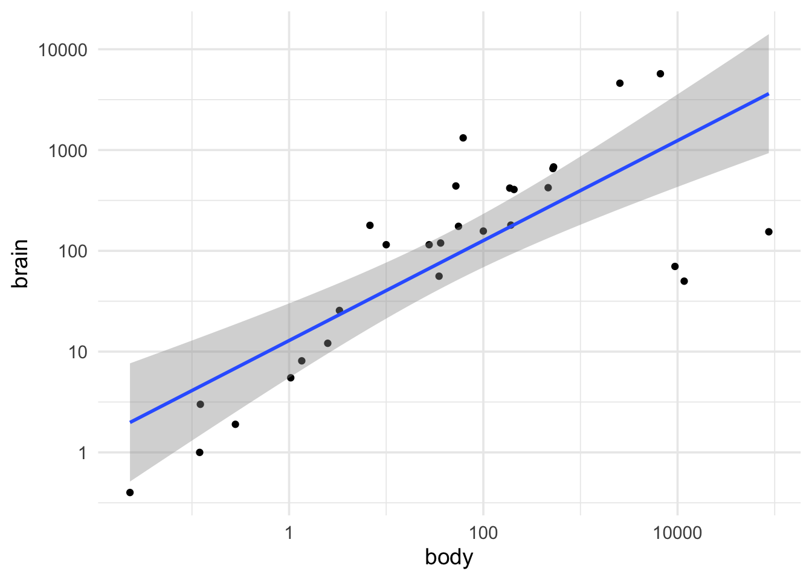
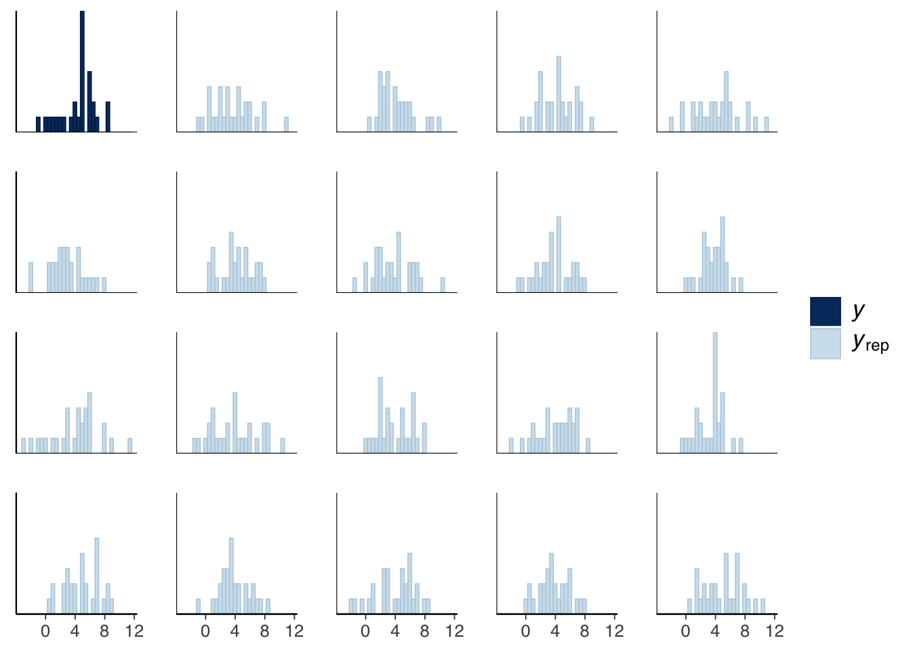
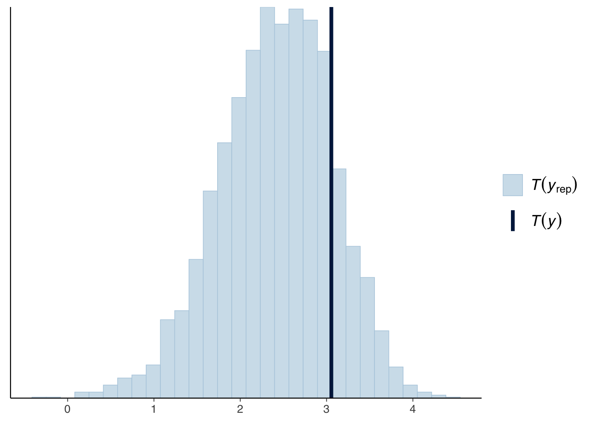
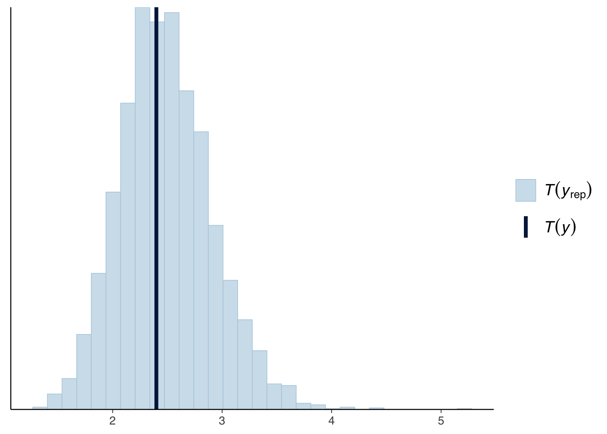

Packages used in this post
library(tidyverse)
library(broom.mixed)
library(MASS)
library(rstanarm)
library(bayesplot)
library(modelsummary)
theme_set(theme_minimal(base_size = 14))Paw Hansen
September 22, 2023
What’s the problem?
What are the basic assumptions of any statistical model? (measurement validity, functional form etc.)
Let’s set up a basic model
Fit a first (naive) model
`geom_smooth()` using formula = 'y ~ x'
# A tibble: 2 × 5
term estimate std.error statistic p.value
<chr> <dbl> <dbl> <dbl> <dbl>
1 (Intercept) 2.55 0.413 6.18 0.00000153
2 body_log 0.496 0.0782 6.35 0.00000102# A tibble: 1 × 12
r.squared adj.r.squared sigma statistic p.value df logLik AIC BIC
<dbl> <dbl> <dbl> <dbl> <dbl> <dbl> <dbl> <dbl> <dbl>
1 0.608 0.593 1.53 40.3 0.00000102 1 -50.6 107. 111.
# ℹ 3 more variables: deviance <dbl>, df.residual <int>, nobs <int>rstanarm
SAMPLING FOR MODEL 'continuous' NOW (CHAIN 1).
Chain 1:
Chain 1: Gradient evaluation took 0.000102 seconds
Chain 1: 1000 transitions using 10 leapfrog steps per transition would take 1.02 seconds.
Chain 1: Adjust your expectations accordingly!
Chain 1:
Chain 1:
Chain 1: Iteration: 1 / 2000 [ 0%] (Warmup)
Chain 1: Iteration: 200 / 2000 [ 10%] (Warmup)
Chain 1: Iteration: 400 / 2000 [ 20%] (Warmup)
Chain 1: Iteration: 600 / 2000 [ 30%] (Warmup)
Chain 1: Iteration: 800 / 2000 [ 40%] (Warmup)
Chain 1: Iteration: 1000 / 2000 [ 50%] (Warmup)
Chain 1: Iteration: 1001 / 2000 [ 50%] (Sampling)
Chain 1: Iteration: 1200 / 2000 [ 60%] (Sampling)
Chain 1: Iteration: 1400 / 2000 [ 70%] (Sampling)
Chain 1: Iteration: 1600 / 2000 [ 80%] (Sampling)
Chain 1: Iteration: 1800 / 2000 [ 90%] (Sampling)
Chain 1: Iteration: 2000 / 2000 [100%] (Sampling)
Chain 1:
Chain 1: Elapsed Time: 0.065934 seconds (Warm-up)
Chain 1: 0.068123 seconds (Sampling)
Chain 1: 0.134057 seconds (Total)
Chain 1:
SAMPLING FOR MODEL 'continuous' NOW (CHAIN 2).
Chain 2:
Chain 2: Gradient evaluation took 2.3e-05 seconds
Chain 2: 1000 transitions using 10 leapfrog steps per transition would take 0.23 seconds.
Chain 2: Adjust your expectations accordingly!
Chain 2:
Chain 2:
Chain 2: Iteration: 1 / 2000 [ 0%] (Warmup)
Chain 2: Iteration: 200 / 2000 [ 10%] (Warmup)
Chain 2: Iteration: 400 / 2000 [ 20%] (Warmup)
Chain 2: Iteration: 600 / 2000 [ 30%] (Warmup)
Chain 2: Iteration: 800 / 2000 [ 40%] (Warmup)
Chain 2: Iteration: 1000 / 2000 [ 50%] (Warmup)
Chain 2: Iteration: 1001 / 2000 [ 50%] (Sampling)
Chain 2: Iteration: 1200 / 2000 [ 60%] (Sampling)
Chain 2: Iteration: 1400 / 2000 [ 70%] (Sampling)
Chain 2: Iteration: 1600 / 2000 [ 80%] (Sampling)
Chain 2: Iteration: 1800 / 2000 [ 90%] (Sampling)
Chain 2: Iteration: 2000 / 2000 [100%] (Sampling)
Chain 2:
Chain 2: Elapsed Time: 0.083251 seconds (Warm-up)
Chain 2: 0.105649 seconds (Sampling)
Chain 2: 0.1889 seconds (Total)
Chain 2:
SAMPLING FOR MODEL 'continuous' NOW (CHAIN 3).
Chain 3:
Chain 3: Gradient evaluation took 3.1e-05 seconds
Chain 3: 1000 transitions using 10 leapfrog steps per transition would take 0.31 seconds.
Chain 3: Adjust your expectations accordingly!
Chain 3:
Chain 3:
Chain 3: Iteration: 1 / 2000 [ 0%] (Warmup)
Chain 3: Iteration: 200 / 2000 [ 10%] (Warmup)
Chain 3: Iteration: 400 / 2000 [ 20%] (Warmup)
Chain 3: Iteration: 600 / 2000 [ 30%] (Warmup)
Chain 3: Iteration: 800 / 2000 [ 40%] (Warmup)
Chain 3: Iteration: 1000 / 2000 [ 50%] (Warmup)
Chain 3: Iteration: 1001 / 2000 [ 50%] (Sampling)
Chain 3: Iteration: 1200 / 2000 [ 60%] (Sampling)
Chain 3: Iteration: 1400 / 2000 [ 70%] (Sampling)
Chain 3: Iteration: 1600 / 2000 [ 80%] (Sampling)
Chain 3: Iteration: 1800 / 2000 [ 90%] (Sampling)
Chain 3: Iteration: 2000 / 2000 [100%] (Sampling)
Chain 3:
Chain 3: Elapsed Time: 0.108 seconds (Warm-up)
Chain 3: 0.070644 seconds (Sampling)
Chain 3: 0.178644 seconds (Total)
Chain 3:
SAMPLING FOR MODEL 'continuous' NOW (CHAIN 4).
Chain 4:
Chain 4: Gradient evaluation took 1.9e-05 seconds
Chain 4: 1000 transitions using 10 leapfrog steps per transition would take 0.19 seconds.
Chain 4: Adjust your expectations accordingly!
Chain 4:
Chain 4:
Chain 4: Iteration: 1 / 2000 [ 0%] (Warmup)
Chain 4: Iteration: 200 / 2000 [ 10%] (Warmup)
Chain 4: Iteration: 400 / 2000 [ 20%] (Warmup)
Chain 4: Iteration: 600 / 2000 [ 30%] (Warmup)
Chain 4: Iteration: 800 / 2000 [ 40%] (Warmup)
Chain 4: Iteration: 1000 / 2000 [ 50%] (Warmup)
Chain 4: Iteration: 1001 / 2000 [ 50%] (Sampling)
Chain 4: Iteration: 1200 / 2000 [ 60%] (Sampling)
Chain 4: Iteration: 1400 / 2000 [ 70%] (Sampling)
Chain 4: Iteration: 1600 / 2000 [ 80%] (Sampling)
Chain 4: Iteration: 1800 / 2000 [ 90%] (Sampling)
Chain 4: Iteration: 2000 / 2000 [100%] (Sampling)
Chain 4:
Chain 4: Elapsed Time: 0.082429 seconds (Warm-up)
Chain 4: 0.088401 seconds (Sampling)
Chain 4: 0.17083 seconds (Total)
Chain 4: Warning:
`modelsummary` uses the `performance` package to extract goodness-of-fit
statistics from models of this class. You can specify the statistics you wish
to compute by supplying a `metrics` argument to `modelsummary`, which will then
push it forward to `performance`. Acceptable values are: "all", "common",
"none", or a character vector of metrics names. For example: `modelsummary(mod,
metrics = c("RMSE", "R2")` Note that some metrics are computationally
expensive. See `?performance::performance` for details.
This warning appears once per session.| (1) | |
|---|---|
| (Intercept) | 2.178 |
| body_log | 0.496 |
| Num.Obs. | 28 |
| R2 | 0.573 |
| R2 Adj. | 0.508 |
| Log.Lik. | −52.307 |
| ELPD | −55.1 |
| ELPD s.e. | 3.4 |
| LOOIC | 110.2 |
| LOOIC s.e. | 6.7 |
| WAIC | 109.9 |
| RMSE | 1.52 |
Now we can use some of the neat built-in functions to plot our replications and compare with the observed data.
One way would be to use histograms:
`stat_bin()` using `bins = 30`. Pick better value with `binwidth`.
Or we could use density curves and make a “spaghetti plot”:
We can also use built-in functions to compute and visualize different test statistics. For example, let’s make a histogram to plot the 25th percentile of the observed data against those of the replicated datasets:
`stat_bin()` using `bins = 30`. Pick better value with `binwidth`.
Or we could plot the standard deviation:
`stat_bin()` using `bins = 30`. Pick better value with `binwidth`.
In both cases, this does not provide that much new information. The mean, mode and median of our replicated datasets are systematically lower than those in the observed data; indicating that there is some room for improvement in our model.